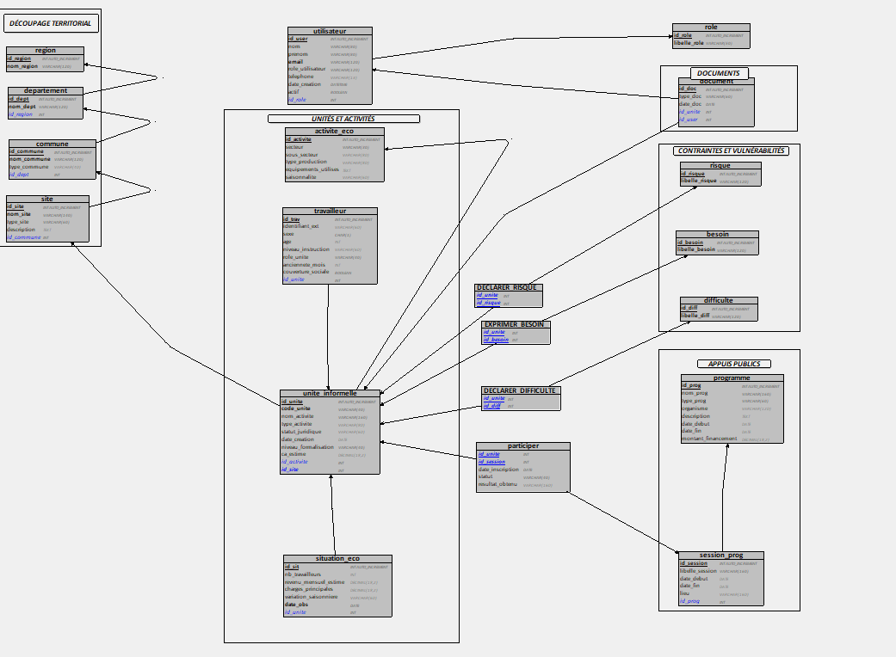

Chapitre4 Modele Logique de Donnees
La traduction du MCD vers le modele relationnel suit les regles classiques de transformation Merise. Le MLD represente la structure logique des tables, leurs attributs et les liens entre elles.
La figure 4.1 presente le diagramme MLD complet issu de la transformation du MCD.

Figure 4.1: Diagramme du Modele Logique de Donnees (MLD)
Legende du MLD :
- #attribut : cle primaire de la table
- @attribut : cle etrangere (reference vers une autre table)
- Les fleches representent les relations de dependance entre tables
4.1 Tables issues des entites
4.1.1 Referentiels utilisateurs
- ROLE (#id_role, libelle_role)
- UTILISATEUR (#id_user, nom, prenom, email, telephone, date_creation, actif, @id_role)
4.1.2 Decoupage territorial
- REGION (#id_region, nom_region)
- DEPARTEMENT (#id_dept, nom_dept, @id_region)
- COMMUNE (#id_commune, nom_commune, type_commune, @id_dept)
- SITE (#id_site, nom_site, type_site, description, @id_commune)
4.1.3 Unites et activites
- ACTIVITE_ECO (#id_activite, secteur, sous_secteur, type_production, saisonnalite, description)
- UNITE_INFORMELLE (#id_unite, code_unite, nom_activite, type_activite, statut_juridique, date_creation, niveau_formalisation, ca_estime, @id_site, @id_activite)
- TRAVAILLEUR (#id_trav, identifiant_ext, sexe, age, niveau_instruction, role_unite, anciennete_mois, couverture_sociale, @id_unite)
- SITUATION_ECO (#id_sit, nb_travailleurs_decl, revenu_mensuel_estime, charges_principales, variation_saisonniere, date_obs, @id_unite)
4.1.4 Vulnerabilites (referentiels)
- DIFFICULTE (#id_diff, libelle_diff)
- RISQUE (#id_risque, libelle_risque)
- BESOIN (#id_besoin, libelle_besoin)
- EQUIPEMENT (#id_equipement, libelle_equipement)
4.2 Tables d’association
- UTILISER (@id_activite, @id_equipement, remarque)
- DECLARER_DIFFICULTE (@id_unite, @id_diff, date_decl, niveau_severite)
- DECLARER_RISQUE (@id_unite, @id_risque, date_decl, probabilite_percue)
- EXPRIMER_BESOIN (@id_unite, @id_besoin, date_decl, priorite)
- PARTICIPER (@id_unite, @id_session, date_inscription, statut, resultat_obtenu, montant_financement)